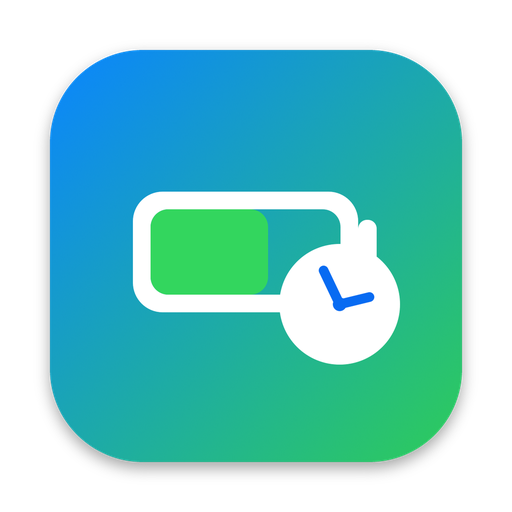

Privacy policy
Battery ETA · effective October 26, 2026
Battery ETA doesn't collect any data. There are no accounts, analytics, ads or trackers, and nothing is sent to the developer or any third party.
What the app uses, and where it stays
- Battery readings (level, charging state, and on a Mac the power draw, battery health and temperature) are read on each device and stored on that device.
- Running apps on a Mac. To estimate what each app adds to the power draw, the Mac app notes which apps are open and which is in front. This log stays on the Mac and is deleted after 14 days. Only a short summary (the few apps using the most power right now, with their estimated watts) is included in the Mac's reading.
- Sync between your devices uses your own iCloud account (iCloud key-value storage) and, for Apple Watch, the connection to its paired iPhone. These copies are protected by Apple and aren't accessible to the developer.
- Notifications are scheduled locally on your device.
Deleting your data
Deleting the app removes its data from that device. To remove the synced copies, delete Battery ETA from your other devices too, or turn off iCloud for it.
Children
The app collects no personal information from anyone, including children.
Changes
If this policy changes, the new version will be posted here with a new effective date.
Contact
Open an issue with any questions.